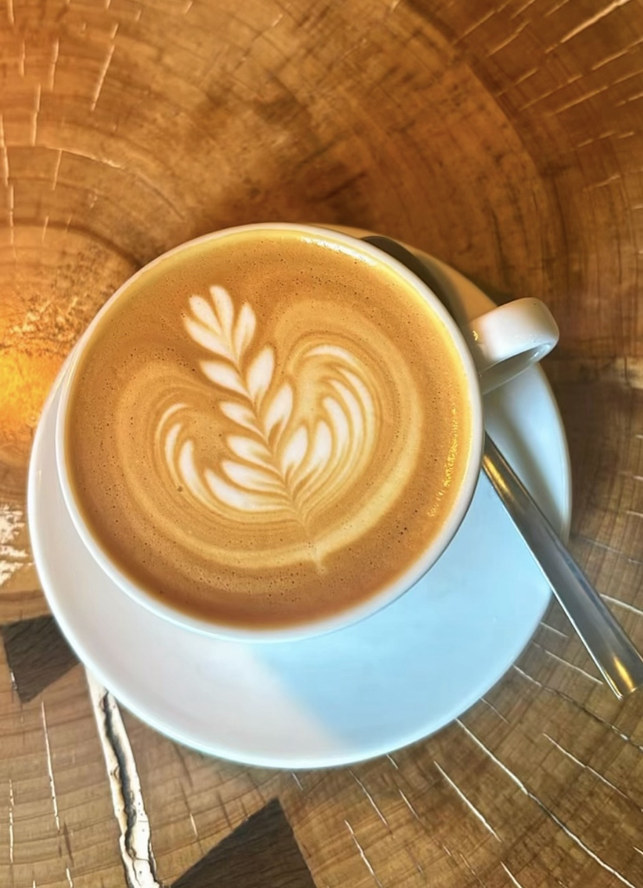
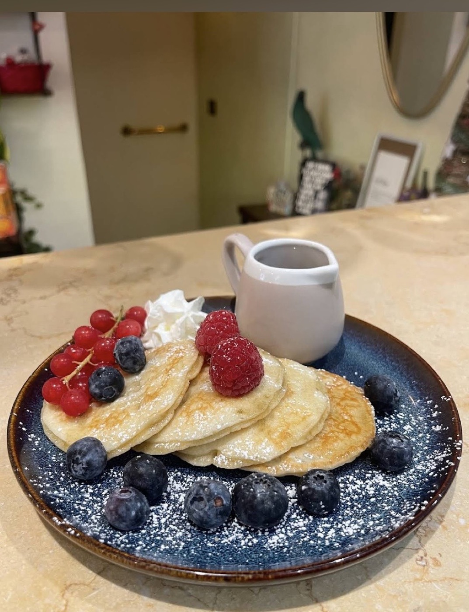

Caffetteria
Espresso, flat white, long black, batch brew e cold brew di stagione. Latte d’avena disponibile.

Specialty coffee & brunch · Dal 2023
Caffè di specialità di scuola australiana e brunch, nel cuore di San Frediano.
4,9 su Google · oltre 660 recensioni
Shop · Il nostro caffè
Miscela della casa · Tostata da D612 Coffee Roasters, Firenze
La miscela che D612, torrefazione fiorentina, tosta in esclusiva per noi. La stessa che usiamo al banco, da preparare a casa.
Al banco
Una carta corta e curata: caffetteria di specialità, brunch fino alle 14:30 e dolci in vetrina.

Espresso, flat white, long black, batch brew e cold brew di stagione. Latte d’avena disponibile.

Bagel, avocado toast, pancake e banana bread. Opzioni senza glutine e vegane.
Orari e indirizzo
Cucina e brunch8:30–14:30
Via Pisana 48R 50143 Firenze · San Frediano
La nostra storia
Manly è un quartiere sul mare a nord di Sydney. The Office è il posto, su quella spiaggia, dove si guarda il tramonto. Da lì viene il nostro nome.
Maykol nasce a Firenze e comincia a lavorare come barman. Poi arriva il caffè, e diventa una passione.
Si forma con Simone Guidi, formatore e fondatore della torrefazione La Sosta, e impara la latte art: disegnare versando il latte nella tazza.
Nel 2016 parte per l’Australia con la sua compagna. Non parla inglese, ma è sicuro delle sue capacità da barista. Pensa che basti.
Non basta: in Australia si lavora e si fa il caffè in un modo completamente diverso. Riparte dalle basi e per quattro anni lavora nelle caffetterie australiane, dove la cultura del caffè è molto più avanti.
Torna a casa con un’idea chiara: aprire un posto suo. Poi arriva il Covid, e il sogno deve aspettare.
Maykol e sua moglie Alice, che lavora anche in cucina, aprono MANLY The Office in Via Pisana.
Lo spazio è piccolo, e si fa il massimo con quello che c’è.
“Hey, how are you? Welcome!”
È la prima cosa che senti quando entri.
Espresso e filtro con L’Australiano di D612. Il caffè resta la vera passione di Maykol, e il centro di tutto.
Scegliere prodotti di qualità è fondamentale. Ma la parte più difficile, e più importante, è far sentire le persone accolte e condividere con loro quello che facciamo.
Pancake, banana bread fatto in casa senza glutine, bagel e avocado toast. Proviamo ad accontentare ogni esigenza alimentare, nei limiti del possibile.